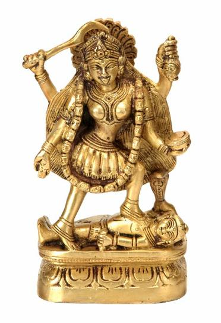

Không có một xứ nào mà tôn giáo có thế lực và đóng một vai trò quan trọng bằng ở Ấn Độ. Người Ấn sở dĩ dễ chấp nhận sự thống trị của ngoại nhân một phần vì họ không cần biết những kẻ thống trị họ thuộc giống người nào; họ cho tôn giáo mới là cốt yếu, chứ không phải chính trị; linh hồn mới là chính, chứ không phải thể xác; các kiếp sau mới là vô tận chứ kiếp này chỉ là phù du! Khi vua Akbar đã thành một vị thánh và gần như theo Ấn giáo, thì mọi người đều thấy sức mạnh phi thường của tôn giáo, cả những người phản đối nó nhất. Ngày nay, chính là một vị thánh[1] chứ không phải một chính khách, một nhà cầm quyền, đã thống nhất được Ấn Độ, mà sự thống nhất đó là lần đầu tiên trong lịch sử họ.
I. THỜI ĐẠI CUỐI CÙNG CỦA ĐẠO PHẬT
Thời cực thịnh của đạo Phật – Tiểu thặng và đại thặng – Mahayana – Đạo Phật, đạo khắc kỉ và đạo Ki Tô – Đạo Phật suy vi – Đạo Phật truyền qua: Tích Lan, Miến Điện, Turkistan, Tây Tạng, Cao Miên, Trung Hoa và Nhật Bản.
Vua Açoka mất được khoảng hai trăm năm thì đạo Phật đạt tới mức độ cực thịnh ở Ấn Độ. Thời gian phát triển của đạo đó, từ triều đại Açoka tới triều đại Harsha, cũng chính là hoàng kim thời đại của tôn giáo về nhiều phương diện. Nhưng Phật giáo thời thịnh đó không còn là đạo của Phật Tổ nữa, mà có thể nói là đạo của Subhadda[2], người đệ tử đã phản kháng lại Ngài khi hay tin Ngài tịch, bảo với mười chín tăng sĩ: “Khóc bấy nhiêu đủ rồi, rên rỉ bấy nhiêu đủ rồi! Bây giờ chúng ta thoát li được đại Samana (Sa Môn) rồi. Từ nay khỏi phải nghe hoài: “Điều này nên làm, điều nọ không nên”. Từ nay chính mình tha hồ muốn làm gì thì làm, và khỏi bị bắt buộc làm điều mình không muốn làm nữa”.
Họ lợi dụng ngay sự tự do đó và tự tách ra thành hai giáo phái. Hai thế kỉ sau Phật Tổ tịch, di sản tinh thần của Ngài chia thành mười tám giáo phái. Những Phật tử ở Nam Ấn và Tích Lan còn giữ đúng trong một thời gian giáo lí giản dị và thuần khiết của Ngài, mà người ta gọi là Hinayana (Tiểu thặng hay Tiểu thừa): họ thờ Phật Tổ không phải như một vị thần mà như một vị truyền đạo vĩ đại, và Thánh kinh của họ là những bản bằng tiếng Pali chép giáo lý nguyên thuỷ. Trái lại, tại khắp Bắc Ấn, Tây Tạng, Mông Cổ, Trung Hoa và Nhật Bản người ta theo giáo lí Mahayama (Đại thặng hay Đại thừa) mà Hội nghị tôn giáo Kanishka đã xác định rồi truyền bá; những nhà thần học này tuyên bố rằng Phật Tổ là Đấng Thần Linh, chung quanh Ngài có vô số Bồ Tát, La Hán; họ theo phép tu khổ hạnh yoga của Patanjali và in một bản kinh mới bằng tiếng sanscrit; kinh này mặc dầu chứa đầy những tế vi siêu hình và thần học, tạo ra một tôn giáo được bình dân (ở Ấn) theo nhiều hơn là đạo nghiêm khắc, bi quan của Thích Ca Mâu Ni.
Đại thặng là một thứ Phật giáo pha nhạt vì có thêm nhiều vị thần, nhiều tập quán, lễ nghi, huyền thoại Bà La Môn hợp với người Tartare ở Kushan, người Mông Cổ ở Tây Tạng, mà vua Kanishka thống trị. Người ta tưởng tượng một cõi trời trên đó có nhiều vị Phật, mà Phật Amida (A-Di-Đà), Đấng Cứu Thế, được dân chúng thờ phụng nhiều nhất: phải có một Thiên đường và một Địa ngục để khuyến thiện trừng ác chứ, thế là nhà vua có cách dùng quân lính vào một việc khác nữa. Trong thần thuyết mới đó, các vị thánh tối cao là các Bodhisattwa (Bồ Tát), tức những đấng đáng được lên cõi Niết Bàn rồi (nghĩa là thoát vòng luân hồi rồi), nhưng tự nguyện đầu thai trong nhiều kiếp nữa để giúp những những kẻ ở trên trần tìm được chính đạo[3]. Cũng như trong các giáo phái Ki Tô ở miền Địa Trung Hải, các vị Bồ Tát đó được dân chúng thờ phụng tới nỗi át hẳn Phật Tổ trong sự lễ bái cũng như trong nghệ thuật. Rồi người ta cũng thờ Phật tích, Phật cốt, cũng dùng nước dương, đốt nhang, đèn, lần tràng hạt, dùng mọi thứ trang sức thuộc về giáo hội, cũng dùng một tử ngữ[4] trong các kinh kệ, rồi tăng ni phải xuống tóc, phải ở độc thân, phải trường trai, phải tụng kinh sám hối, cũng phong thánh những người tử vì đạo, cũng tạo ra tĩnh-tội-giới, cũng tụng kinh siêu độ cho người chết, tóm lại là Phật giáo Đại Thặng có đủ những hình thức lễ nghi của Ki Tô giáo thời Trung cổ, và hình như nhiều hình thức lễ nghi của Ki Tô đã mượn của Phật giáo[5]. Thành thử Đại Thặng đối với Tiểu Thặng tức Phật giáo nguyên thuỷ cũng tựa như Công giáo đối với đạo Khắc Kỉ và Ki Tô giáo nguyên thuỷ. Phật Tổ, cũng như Luther sau này, đã tưởng lầm rằng nghi thức – một thứ bi kịch tôn giáo – có thể thay bằng những lời thuyết pháp và dạy luân lí; vì vậy mà một thứ Phật giáo nhiều thần thoại, phép màu, lễ bái, có vô số các vị thần thánh làm trung gian giữa tín đồ và Đấng Tối Cao, đã thắng Phật giáo nguyên thuỷ, cũng như Công giáo đa sắc thái, chú trọng tới bề ngoài đã thắng Ki Tô giáo giản dị, nghiêm khắc thời nguyên thuỷ và thắng đạo Tin Lành thời cận đại.
Chính vì dân chúng thích đa thần giáo, thích phép màu và huyền thoại mà làm cho Phật giáo nguyên thuỷ suy tàn, rốt cuộc chính Đại Thặng cũng bị linh lạc ngay trên đất Ấn Độ nữa. Vì nói theo cái giọng các sử gia làm khôn hơn cổ nhân[6] – Phật giáo mượn của Ấn giáo các huyền thoại và các lời thần, lần lần lấp được cái hố giữa hai tôn giáo thời nguyên thuỷ và người ta có thể biết trước được rằng tôn giáo nào đâm rễ sâu trong dân chúng nhất, hợp với nguyện vọng của quần chúng nhất, sau cùng, có những nguồn lợi kinh tế lớn nhất, được chính quyền ủng hộ nhất, sẽ nuốt được tôn giáo kia. Tức thì cái lòng tin dị đoan nó chính là da thịt, khí huyết của loài người, từ tôn giáo cũ truyền qua tôn giáo mới, tới nỗi những lễ nghi về sự thờ phụng dương vật của các giáo phái Shakti cũng thấy xuất hiện trong đạo Phật nữa. Các tu sĩ Bà La Môn vốn kiên nhẫn vô cùng, lần lần phục hồi được uy tín và lại được nhà vua bảo hộ, và rốt cuộc, triết gia trẻ tuổi Shankara, lại làm cho các kinh Veda thành căn bản của tư tưởng Ấn Độ và từ đó Phật giáo mất địa vị lãnh đạo tinh thần ở Ấn.
Tuy nhiên đòn tối hậu không phải tự đạo Bà La Môn mà tự ngoại nhân tung ra và có thể nói là chính Phật giáo đã tự gây hoạ cho mình. Uy tín của Sangha (Tăng Già) đã thu hút vua Açoka và dòng dõi quí phái nhất của giới Magadha (tức những người mà mẹ thuộc tập cấp kshatriya, cha thuộc tập cấp vaisya), mà tạo thành một tăng lữ độc thân yêu hoà bình; ngay thời Phật Tổ đã có vài nhà ái quốc than rằng “tăng sĩ Gautama khuyến khích người ta đừng sinh con đẻ cái nữa, như vậy các gia đình sẽ tuyệt tự mất”. Sự phát triển của Phật giáo và chế độ tăng viện ở đầu kỉ nguyên một mặt, sự chia rẽ về chính trị mặt khác, cả hai đều làm cho sức chống cự của Ấn suy đi và Ấn dễ bị ngoại nhân xâm lăng. Khi người Ả Rập vô cõi, nóng nảy muốn truyền bá một nhất thần giáo giản dị, khắc khổ, trông thấy các nhà sư biếng nhác, ham tiền, sống nhờ lòng mê tín của các tín đồ ngu xuẩn thì họ chẳng những khinh bỉ ra mặt mà còn thấy gai mắt, cho phá hết các chùa chiền, giết hàng ngàn nhà sư, mà dân chúng ngại không còn ai muốn đầu Phật nữa. Những kẻ sống sót bị đạo Bà La Môn thu hút trở lại, thế là tôn giáo chính thống thời xưa tiếp nhận các người theo “tà giáo” đã biết hối hận, và “đạo Bà La Môn thân thiện bóp chết Phật giáo”. Đạo Bà La Môn bao giờ cũng khoan dung: lịch sử các cuộc thịnh suy, lên xuống của đạo Phật và cả trăm giáo phái khác đầy những chuyện tranh biện, gây lộn, nhưng tuyệt nhiên không có một vụ tàn sát nào cả. Trái lại, đạo Bà La Môn còn nhận Phật Tổ là một vị thần – hoá thân của thần Vichnou – thành thử có vẻ khuyến khích người con hoang [Phật tử] trở về mái nhà cũ [đạo Bà La Môn]; không những vậy còn chấp nhận thuyết của Phật cho rằng mọi sinh vật đều thiêng liêng, do đó cấm sự giết súc vật để tế thần; thế là sau năm trăm năm suy lần, đạo Phật biến mất ở Ấn Độ một cách êm ái, ôn hoà[7].
Nhưng đạo Phật đã lan tràn tới khắp các xứ khác ở Á châu. Giáo lí, nghệ thuật, văn học của nó truyền qua đảo Tích Lan, bán đảo Mã Lai ở phía Nam, qua Tây Tạng, Turkestan ở phía Bắc, qua Miến Điện, Thái Lan[8], Cao Miên, Trung Hoa, Triều Tiên, Nhật Bản ở phía Đông, và nhờ đạo đó mà đem văn minh vô các xứ đó – trừ Viễn Đông đã có một nền văn minh rồi – cũng như ở thời Trung cổ, nhờ các tu sĩ La Mã và Byzantine mà văn minh vô được Tây Âu và Nga. Có thể nói tại các xứ đó, văn minh đạt được cực điểm chính là nhờ đạo Phật. Từ thời Açoka cho tới thế kỉ thứ IX, lúc mà đạo Phật bắt đầu suy vi, thành phố Anuradhapura ở Tích Lan là một trong những thành phố lớn nhất ở phương Đông, tại đó từ hai ngàn năm nay người ta vẫn thờ cây bồ đề và ngôi đền ở trên cao nguyên Kandy[9] là một thánh địa của 150 triệu người theo đạo Phật ở châu Á[10]. Có lẽ chỉ ở Miến Điện là các nhà sư thường gần giữ được lí tưởng của Phật Tổ, mà đạo Phật còn được thuần tuý hơn cả; nhờ các nhà sư đó mà 13 triệu dân Miến có một mức sống tương đối cao hơn mức sống ở Ấn. Sven Hedin, Aurel Stein và Pelliot đã tìm được ở Turkestan mấy trăm bản viết tay thời cổ về đạo Phật và nhiều di tích khác của một nền văn hóa đã thịnh ở xứ đó từ thời đại Kanishka tới thế kỉ XIII. Thế kỉ thứ VII, một chiến sĩ yêu văn minh, Srong–tsan Gampo, lập một chính quyền vững vàng ở Tây Tạng, chiếm xứ Népal, và dựng ở Lhassa một kinh đô, chẳng bao lâu rất thịnh vượng vì là một trung tâm tích trữ các hàng hoá từ Ấn qua Trung Hoa và từ Trung Hoa qua Ấn. Sau khi mời các nhà sư tới Tây Tạng, sau khi truyền bá giáo dục và đạo Phật trong dân chúng, ông tạm rời ngôi báu trong bốn năm để tập đọc tập viết và mở đầu cho thời đại hoàng kim ở Tây Tạng. Ông cho xây cất mấy ngàn ngôi chùa Phật trên các núi và cao nguyên, và cho in một bộ kinh, luận gồm ba trăm ba mươi ba cuốn, bảo tồn được cho các học giả ngày nay biết bao tác phẩm quí giá mà nguyên bản ở Ấn Độ đã mất từ lâu. Chính ở Tây Tạng cách biệt với thế giới bên ngoài mà Phật giáo có vô số dị đoan, một chế độ tăng viện và một chủ nghĩa giáo tôn (cléricalisme) mà khắp thế giới, ngoài châu Âu thời đầu Trung cổ, không nơi nào sánh kịp. Còn vị Dalai-Lama (Đạt-Lai Đạt-Ma, tức Hoạt Phật ở Tây Tạng) Ngài ở trong tịnh thất của đại tu viện Po-ta-la, ở trên chỗ cao nhất của kinh đô Lhassa; ngày nay dân Tây Tạng còn coi Ngài là hiện thân của Đức Bồ Tát Avalokiteshvara[11]. Ở Cao Miên, đạo Phật và đạo Ấn dung hoà với nhau đã gây một tinh thần tôn giáo làm nẩy nở một giai đoạn đẹp đẽ nhất của nghệ thuật Đông phương[12]. Cũng như Ki Tô giáo, đạo Phật ra khỏi xứ rồi mới phát triển rực rỡ nhất. Ta nên nói thêm rằng đạo đó thắng lợi như vậy mà không hề làm đổ một giọt máu.
Ấn giáo – Brama, Vichnou, Shiva – Krishna Kali – Các thần thú vật – Thần Bò cái – Phiếm thần giáo và nhất thần giáo.
Từ nay Ấn giáo thay thế Phật giáo, sự thực nó không phải là một tôn giáo, có thể nói thêm rằng: nó không phải chỉ là một tôn giáo; nó là một mớ lộn xộn gồm đủ các tín ngưỡng, các nghi thức cúng vái mà tín đồ và các người chủ tế chỉ có bốn điểm này chung với nhau: họ đều công nhận chế độ tập cấp mà tập cấp cao nhất là tập cấp Bà La Môn; họ cùng thờ Bò cái; cùng tin luật Karma và thuyết luân hồi; sau cùng họ đã thay các thần cũ trong các kinh Veda bằng những thần mới. Một phần những tín ngưỡng đó đã có từ trước thời Veda, và đã tồn tại được; một phần khác gồm những nghi thức và thần linh, huyền thoại, dị đoan cũng do các tu sĩ Bà La Môn gom góp nhưng không có trong các Thánh kinh và hầu hết là trái ngược với tinh thần trong các kinh Veda; tất cả cái mớ hổ lốn đó được tinh thần tôn giáo Ấn Độ nhào lộn lại chính trong thời đại mà uy tín của Phật giáo suy nhược. Các thần của Ấn giáo có đặc điểm này là có quyền uy rất lớn, có khả năng tri và hành phi thường, vì dáng vóc, cơ thể mạnh quá, “tràn” ra, mọc thêm ra. Chẳng hạn thần Brahma thời đại này có tới bốn mặt, thần Kartikeya có sáu mặt, thần Shiva có ba mắt, thần Indra có ngàn mắt và hầu hết các vị thần đó đều có bốn cánh tay. Thần Brahma là chúa tể của các vị thần đó nhưng ngài ngự trị một cách lơ là, hơi khuất mặt, tránh sự thờ phục của dân chúng, cũng tựa thái độ của các ông vua lập hiến ở châu Âu hiện nay. Thần Vichnou và thần Shiva hợp với ngài thành một bộ ba – chứ không phải là tam vị nhất thể. Vichnou là một vị thần nhân ái, một ông thiện, luôn sẵn sàng giáng trần để cứu nhân độ thế. Krishna thường là hoá thân của ông, sinh trong khám, làm những việc oanh liệt phi thường không thua các nhân vật tiểu thuyết để cứu người điếc, người mù, an ủi người cùi, bênh vực kẻ nghèo và cải tử hoàn sinh những người chết. Ông có một đệ tử thân tín, Arjuna, và gặp mặt Arjuna, ông luôn luôn biến hình đổi dạng. Có người bảo ông bị tên mà chết, có người lại bảo ông bị đóng đinh lên thân cây. Chết rồi, ông xuống địa ngục rồi lên thiên đường, rồi tới ngày tận thế ông sẽ trở xuống để xử kẻ sống và người chết.
Người Ấn cho rằng đời sống cũng như vũ trụ, qua ba giai đoạn liên tiếp: sinh, trưởng rồi diệt. Vì vậy có ba thứ thần: thần Brahma, đức Sáng tạo; thần Vichnou, đức Bảo tồn; và thần Shiva, đức Huỷ diệt: đó là Tri-murti[13], tức “ba hình thức” mà tất cả các người Ấn, trừ những tín đồ Jaïn [và Hồi giáo, dĩ nhiên] đều theo[14].
Có hai phái: phái tôn thần Vichnou và phái tôn thần Shiva. Hai phái đó hoà thuận với nhau và đôi khi cúng tế chung trong một ngôi đền; còn các Bà La Môn luôn luôn thận trọng, được đa số dân chúng theo, thờ cả hai vị thần đó ngang nhau, không thiên vị nào. Mỗi buổi sáng, tín đồ phái tôn Vichnou vẽ lên trán bằng thổ hoàng (ocre)[15] dấu hiệu của Vichnou; còn tín đồ phái tôn Shiva thì bôi lên lông mày một vạch ngang bằng than phân bò cái, hoặc đeo ở cánh tay, ở cổ cái linga, tượng trưng dương vật.
Sự thờ phụng thần Shiva đáng kể là cổ nhất trong Ấn giáo mà đồng thời cũng là một yếu tố thâm thuý nhất, ghê gớm nhất. Ông John Marshall bảo ở Mohenjo Daro có những “dấu vết không cãi được” của sự thờ phụng Shiva: có một cái tượng nhỏ của Shiva ba đầu và có ba cái cột nhỏ bằng đá mà ông cho là tượng trưng dương vật. Rồi ông kết luận: “Như vậy sự thờ phụng Shiva là tôn giáo cổ nhất thế giới”[16].
Tên của vị thần đó là một cách uyển từ[17], nói ngược với ý mình muốn diễn, vì nghĩa gốc của từ ngữ Shiva là tốt, có hảo ý, mà thần Shiva lại là một ông Ác, tàn phá mọi vật, tượng trưng cái năng lực thiên nhiên tàn khốc huỷ diệt mọi cơ thể, mọi loài vật, mọi lí tưởng, mọi công trình, mọi hành tinh, nghĩa là huỷ diệt hết thảy không chừa một cái gì. Không có một dân tộc nào khác mà dám nhận định một cách thành thực như vậy tính cách thay đổi của mọi hình thức cùng sự vô tư của thiên nhiên, và cũng nhận một cách thành thực vô cùng rằng cái ác bù cho cái thiện, rằng có sáng tạo thì có huỷ diệt, và hễ sinh ra là mắc một tội lớn, sẽ phải chịu cái hình phạt là chết. Người Ấn phải chịu cả ngàn nỗi thống khổ, tai vạ, cho rằng nguyên do là có một sức mạnh nào đó hoạt động không ngừng, chỉ thích đập phá tan tành những gì mà thần Brahma – đức Sáng tạo vũ trụ – đã sinh ra. Thần Shiva làm mưa làm gió trong một vũ trụ luôn luôn tự sinh thành, rồi huỷ diệt để lại tự sinh thành nữa.

Nữ thần Kali
(http://www.gangesindia.com/catalog/images/DSC_1290-Brs-Kali-Big.jpg)
Tử là trừng phạt Sinh, thì Sinh lại là thắng được Tử; cho nên chính vị thần tượng trưng cho sự huỷ diệt, đối với người Ấn, cũng đồng thời tượng trưng cái dòng cuồn cuộn sinh sinh bất tuyệt nó làm cho giống nòi được trường tồn mặc dầu cá nhân phải thoát xác. Trong vài miền ở Ấn, đặc biệt là miền Bengale, cái năng lực Sinh hoá, Sáng tạo đó (Shakti) của thần Shiva – tức của thiên nhiên – được tượng trưng bằng nữ thần Kali (hoặc Parvati, Uma, Durga) vợ của Shiva. Cho tới thế kỉ trước, sự thờ phụng này gồm nhiều nghi thức đổ máu, có khi còn giết người để tế nữa, nhưng ngày nay nữ thần chỉ đòi được tế bằng dê cái thôi. Dân chúng tạc hình nữ thần đó, mặt mày đen thui, miệng hoác, lưỡi lè ra; nữ thần trang sức bằng những con rắn, và thần múa trên một thây ma, bông tay là xác đàn ông, chuổi hột gồm toàn những sọ người, mặt và ngực bôi đầy máu. Thần có bốn tay, một tay cầm thanh gươm, một tay cầm một đầu người mới chặt, còn hai tay kia đưa ra như để ban phúc và che chở. Vì Kali-Parvati không phải chỉ là thần Chết, huỷ diệt, mà còn là thần Sanh đẻ nữa, vừa hiền hậu, vừa tàn ác, giết chóc đấy nhưng cũng có thể mỉm cười. Có lẽ hồi xưa, hồi còn ở Sumérie, chưa được đem vô Ấn Độ, nữ thần chưa ghê gớm như vậy, mà chỉ là một nữ thần phù hộ cho các bà mẹ. Người Ấn cho nữ thần và chồng của bà những nét rùng rợn có lẽ là để cho tín đồ phải sợ và có lẽ cũng để cho họ phải rộng rãi cúng tiền và tặng vật cho các thầy tu[18].
Ở trên tôi đã kể năm vị thần thượng đẳng của Ấn giáo; dưới năm vị đó có lẽ còn tới ba chục triệu thần lớn nhỏ nữa, mà nội việc kể tên thôi cũng đặc cả trăm cuốn sách. Có một số chỉ là những thiên sứ (angle), một số khác là quỉ, một số nữa là thiên thể, như mặt trời; một số nữa chỉ như một thứ thần hộ thân, như Lakshmi (thần May mắn), đa số là những thú dữ trong rừng và chim trên trời. Người Ấn không phân biệt hẳn người và vật; họ cho người và vật đều có linh hồn, và linh hồn người có thể nhập vào một cơ thể vật, mà linh hồn vật cũng có thể nhập vào cơ thể người: mọi loài đều phải chịu chung luật Quả báo và chết rồi linh hồn phải thác sinh. Chẳng hạn con voi thành thần Ganesha và được coi là con của thần Shiva; nó tượng trưng khía cạnh thú vật của con người và hình ảnh của nó đồng thời dùng làm bùa trừ tà được. Khỉ và rắn thời xưa đáng sợ lắm, nên cũng được phong làm thần. Con rắn cobra [một thứ rắn hổ], hoặc naga, rất độc, cắn ai thì người ấy gần như chết tức khắc, nên được đặc biệt thờ phụng, và ở nhiều miền, mỗi năm dân chúng mở hội, làm lễ, đặt ở cửa hang rắn, nào chuối nào sữa để cúng rắn. Ở miền Đông xứ
Nhưng người Ấn cho rằng không có con vật nào thiêng liêng bằng con bò cái. Trong các đền chùa, trong các tư gia, ngay cả tại những chỗ công cộng, đâu đâu cũng thấy hình và tượng bò mộng; lớn nhỏ đủ cỡ và đúc, nặn, khắc bằng đủ vật liệu; nhưng chính con bò cái mới được toàn thể dân chúng quí trọng, thờ phụng nhất; nó nghênh ngang đi giữa đường phố trong châu thành; phân của nó được dùng để đốt hoặc để làm một thứ thuốc cao linh nghiệm; nước tiểu của nó có tính cách linh thiêng, tẩy được mọi ô uế ở ngoài cũng như ở trong cơ thể. Người Ấn (dĩ nhiên không kể những người Hồi giáo ở Ấn) không khi nào chịu ăn thịt nó, dùng da nó làm nón, găng tay, giày dép; khi nó chết người ta làm lễ táng nó một cách long trọng theo nghi thức tôn giáo. Có lẽ xưa kia một nhà cầm quyền nào đó đã tạo ra sự cấm kị đó để cho dân Ấn, mỗi ngày mỗi tăng, có đủ bò kéo cày; ngày nay ở Ấn cứ bốn người dân thì có một con bò cái. Người Ấn cho rằng yêu bò cái, không ăn thịt nó, là điều rất hữu lí, cũng như yêu chó mèo, không ăn thịt chó mèo vậy; nhưng có điều này chua chát, mỉa mai là các tu sĩ Bà La Môn cấm giết bò cái, cấm làm đau đớn con giun, cái kiến, mà đồng thời lại khuyên người ta thiêu sống các quả phụ. Sự thực trong lịch sử, dân tộc nào cũng đã thờ loài vật, và nếu đã phải phong thần cho một loài vật nào thì theo tôi, con bò cái hiền lành đáng được thờ như bất kì con vật nào khác. Với lại chúng ta có quyền gì để chê bai người Ấn đã thờ biết bao loài vật như vậy? Chúng ta chẳng có con rắn trong vườn Thượng Uyển Eden, con bò vàng trong kinh Cựu Ước, con cá thần trong các hầm mộ và con Cừu con rất dễ thương của Chúa đấy ư?
Sở dĩ có phiếm thần giáo là vì con người chất phác không thể suy nghĩ bằng những từ ngữ trừu tượng, mà dễ hiểu những cái gì cụ thể, dễ tuân theo ý muốn của một quyền uy nào đó hơn là những mệnh lệnh của luật pháp. Người Ấn lờ mờ nhận thấy rằng ngũ quan của chúng ta chỉ thấy được cái bề ngoài; sau cái bề ngoài của mọi biến cố, có vô số sinh vật siêu tự nhiên mà chúng ta chỉ cảm thấy được thôi chứ không trông thấy, như Kant đã nói. Lại thêm các tu sĩ Bà La Môn đã khoan hoà, chấp nhận mọi thứ thần linh của mỗi miền, của mỗi bộ lạc, mời lên ngồi chung cái điện như chư thần đông nghẹt của họ, thành thử một vị thần đã có trước rồi, lại được hoá thân thành mấy vị thần khác nữa mà cũng được đồng thời thờ với nhau[19]. Tín ngưỡng nào cũng được trọng hết, miễn là tín đồ phải cúng tiền cho hàng tư tế [tức như bọn thầy cúng]. Rốt cuộc, vị thần nào cũng là một thuộc tính, một tượng trưng hoặc một hậu thân của một vị thần khác, và người Ấn nào biết suy tư sẽ thấy cả triệu vị thần của họ hỗn hợp với nhau thành một vị thần duy nhất, mà phiếm thần giáo của họ gần thành một thứ nhất thần giáo, một thứ nhất nguyên luận. Một tín đồ Ki Tô giáo ngoan đạo tuy thờ phụng Thánh Mẫu[20] và chư thánh đấy mà vẫn là theo nhất thần giáo vì chỉ có một Đấng Tối Cao là Chúa, thì người Ấn cũng vậy, cầu nguyện Kali, Rama, Krishna hoặc Ganesha mà đâu có quên rằng những thần đó chưa phải là thần tối cao[21]. Một số người Ấn cho Vichnou là vị thần tối cao, còn Shiva chỉ là một thần thứ đẳng, một số khác lại coi Shiva là thần tối cao, mà Vichnou chỉ là một thiên sứ, sở dĩ chỉ một số ít thờ Brahma là vì Brahma không có hình thể như người, không đụng chạm tới được, ở xa thăm thẳm trên chín từng, không cho loài người thấy mặt; cũng chính vì những lí do đó mà đa số giáo đường Ki Tô giáo được dựng lên để thờ Đức Thánh Mẫu[22] hoặc một vị thánh nào đó, mãi tới thế kỉ XVIII, Voltaire mới dựng riêng một tiểu giáo đường để thờ Thiên Chúa thôi, chứ không thờ thánh nào hết.
[1] Tác giả muốn ám chỉ Thánh Gandhi. (ND).
[2] Không biết Subhadda được nói ở đây có phải là người cuối cùng, một du sĩ, được Đức Phật giáo hoá, lúc Ngài sắp tịch không? (Goldfish).
[3] Trong một Purana (tên chung chỉ các sách dạy giáo lí cho các tập cấp không phải Bà La Môn) có chép huyền thoại đặc biệt này: một ông vua đáng được lên Thiên đường mà tự nguyện ở lại Địa ngục để chia sẻ nỗi khổ của những kẻ bị đày xuống đó, cho tới khi nào họ được cứu rỗi hết rồi mới lên Niết Bàn mà thành Phật.
[4] Tử ngữ (sách in sai thành từ ngữ): tác giả ám chỉ tiếng sanscrit. (Goldfish).
[5] Fergusson bảo: “Tín đồ Phật giáo đã đi trước Giáo hội La Mã… cả năm thế kỉ trong việc sáng lập và thi hành các cuộc lễ và các nghi thức chung cho cả hai tôn giáo”. Còn Edmunds thì vạch các chi tiết để làm nổi bật lên những điểm giống nhau các Thánh kinh Ki Tô giáo và Phật giáo. Tuy nhiên sự hiểu biết của chúng ta về nguyên thuỷ của các tục lệ và tín ngưỡng đó còn mơ hồ quá, nên chưa thể kết luận dứt khoát rằng Ki Tô giáo có chịu ảnh hưởng của Phật giáo không.
[6] Bản tiếng Pháp là: la sagesse a posteriori mà tôi có thể dịch là cái khôn hậu luận, nghĩa là thấy cổ nhân lầm lẫn rồi, sử gia mới rút ra một kết luận như tỏ rằng mình khôn hơn cổ nhân. (ND).
[7] Hiện nay ở Ấn chỉ còn khoảng ba triệu người theo đạo Phật, tức chưa đầy một phần trăm dân chúng.
[8] Thái Lan: nguyên văn tiếng Anh là
[9]
[10] Chính ở đền
[“Răng của mắt” Phật: nguyên văn tiếng Anh là “eye-tooth of Buddha”, tức răng nanh của Phật. Theo Tỳ Kheo Indacanda (Trương Đình Dũng) thì đó là “xá lợi răng bên trái của đức Phật” (theo http://suoinguonhanhphuc.com/InfoShow.aspx?InfoID=497). (Goldfish)].
[11] Tức Đức Quán Thế Âm Bồ Tát. (Goldfish).
[12] Ở Cao Miên: bản tiếng Anh chép là: In
[13] Tri-Murti: Bản tiếng Anh chép là Trimurti. Bảng Danh từ Ấn, Hồi ở cuối sách ghi: Trimurti: Tượng thần Shiva có ba mặt. (Goldfish).
[14] Sau lần điều tra năm 1921, các tôn giáo Ấn Độ chia ra như: Ấn giáo 216.261.000 tín đồ; Jaïn 1.178.000; Phật giáo 11.571.000 (mà trên đất Ấn có khoảng 3.000.000 còn lại bao nhiêu ở Tích Lan và Miến Điện); đạo Zoroastre 102.000; Hồi giáo 68.735.000; Do Thái giáo 22.000; Ki Tô giáo 4.754.000 (đa số người Âu).
[15] Bản tiếng Anh chép là: red clay, nghĩa là một thứ đất sét màu đỏ. (Goldfish).
[16] Nhưng cũng phải nhận rằng tên Shiva cũng như tên Brahmane không thấy có trong Rig Veda. Nhà ngữ pháp học Patanjali bảo có những hình ảnh Shiva và các tín đồ thờ thần đó vào khoảng 150 trước Công nguyên.
[17] Nguyên văn: euphemism, nghĩa là cách nói trại, lời nói trại, uyển ngữ. (Goldfish).
[18] Đáng để ý rằng các tu sĩ trong phái thờ thần Shiva, rất ít khi là người Bà La Môn; đa số Bà La Môn chê những nghi tiết kì cục, quá lố trong sự thờ phụng Shakti.
[19] Chẳng hạn trong kinh Veda đã có thần Mặt trời rồi, sau bộ lạc X, bộ lạc Y cũng có thần Mặt trời mà gọi tên khác, và người Bà La Môn cũng thờ chung ba vị đó mà không sợ trùng.
[20] Thánh Mẫu: nguyên văn là Madonna. (Godfish).
[21] Trích trong báo cáo trình lên chính quyền Ấn về công việc kiểm tra năm 1901: “Sau khi nghiên cứu chúng tôi rút ra kết luận này: đại đa số người Ấn tin chắc có một Đấng Tối Cao”.
[22] Đức Thánh Mẫu: nguyên văn là Mary. (Goldfish).